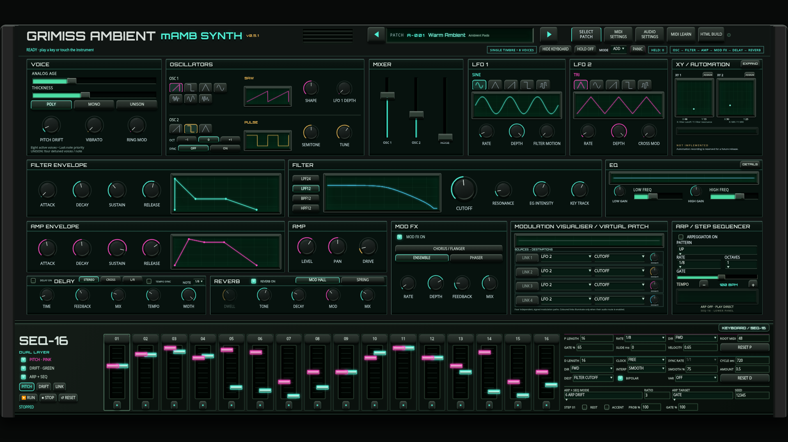
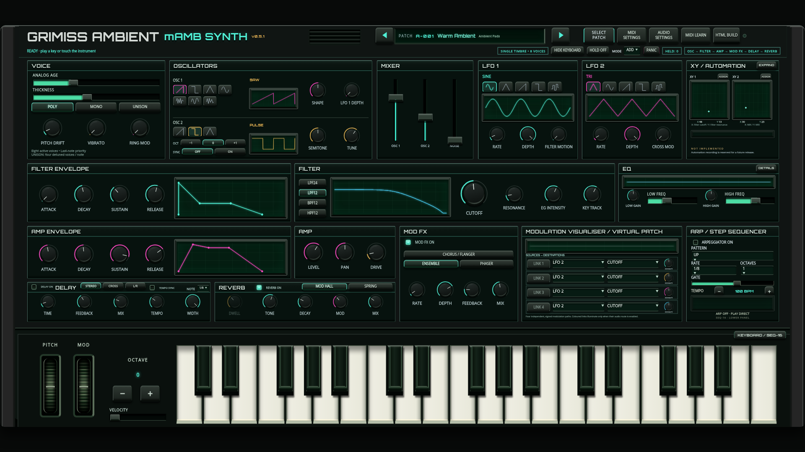
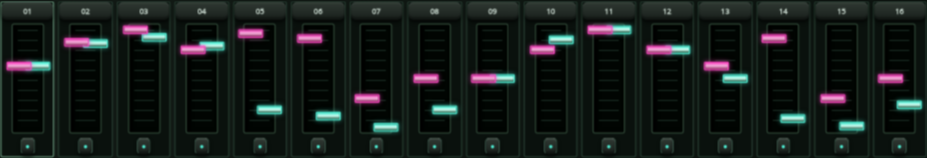
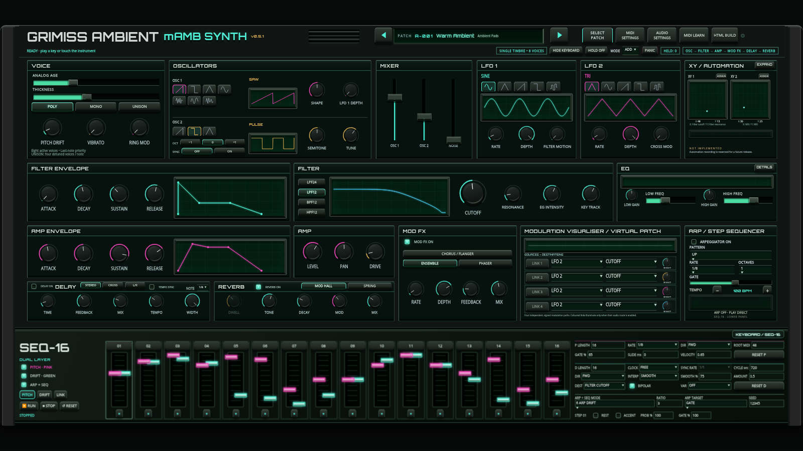

Open playable synthesizer · Implementation, tests and limits
Press KEYBOARD / SEQ-16 in the lower housing, then RUN. Pink sets notes; green modulates the current patch. For combined modes, enable the upper arp, hold a chord, enable ARP + SEQ below and choose any of the six modes. Select a step number to edit rhythm. Save/export patches normally.




Automated evidence: engine · browser · stability and local CPU. Physical controllers/tablets and live background-tab suspension are unverified.